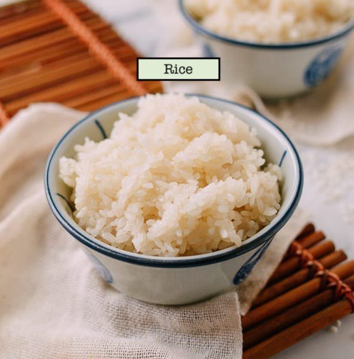
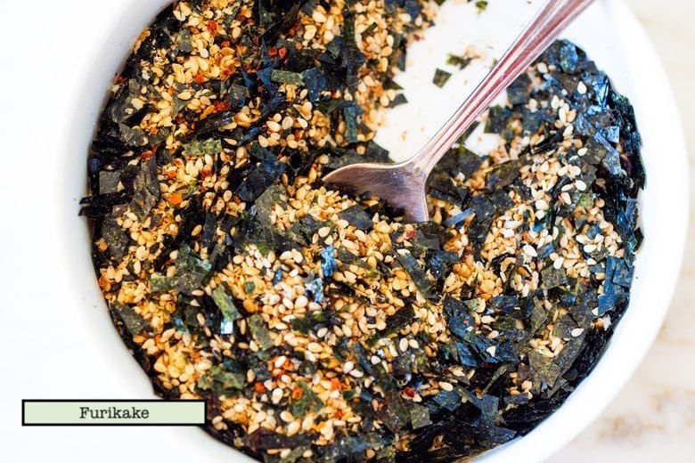
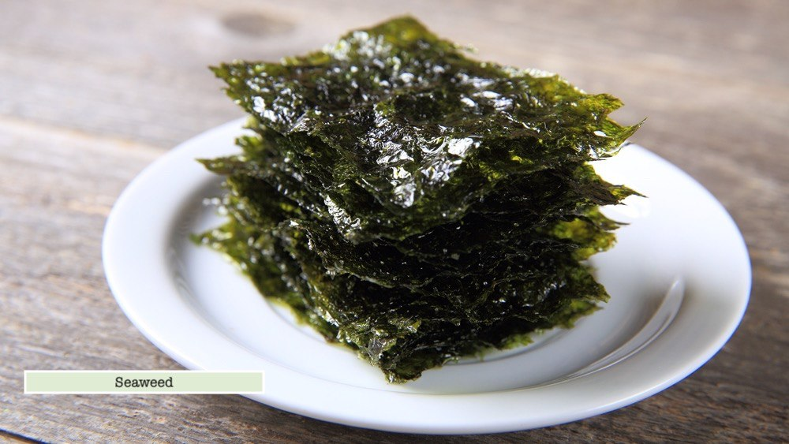

This is a type of Japanese seasoning usually sprinkled over cooked rice. (or) any kinds of seasioning you can add.
Seaweed🍙:
The flat seaweed wrapper.



Here are 7 steps to make yummy Riceball.🍙
Step 1:❤︎
Pop your cooked sushi rice into a large mixing bowl.
Add the furikake rice seasoning and mix through evenly.
Note: if you feel like hiding something tasty inside instead, you can skip this step.
Step 2:❤︎
Separate the rice into equal portions, approximately one large handful for each riceball.
Step 3:❤︎
Wet your hands with water and rub together with a pinch or two of salt.
This stops the rice sticking to your hands and helps keep it fresher for longer.
Step 4:❤︎
Pick up one handful/portion of rice.
If you are hiding some fillings inside,
here is where you make an indent, place the ingredients inside and fold the rice over,
then lightly press into a ball.
Step 5:❤︎
Using mainly your fingertips while resting the rice on your palm,
start to press and squeeze the rice into a triangular shape.
Step 6:❤︎
Place a slice of seaweed wrapper on the bottom of the riceball, rough side in towards the rice.
Then fold it up towards to the middle of the riceball.